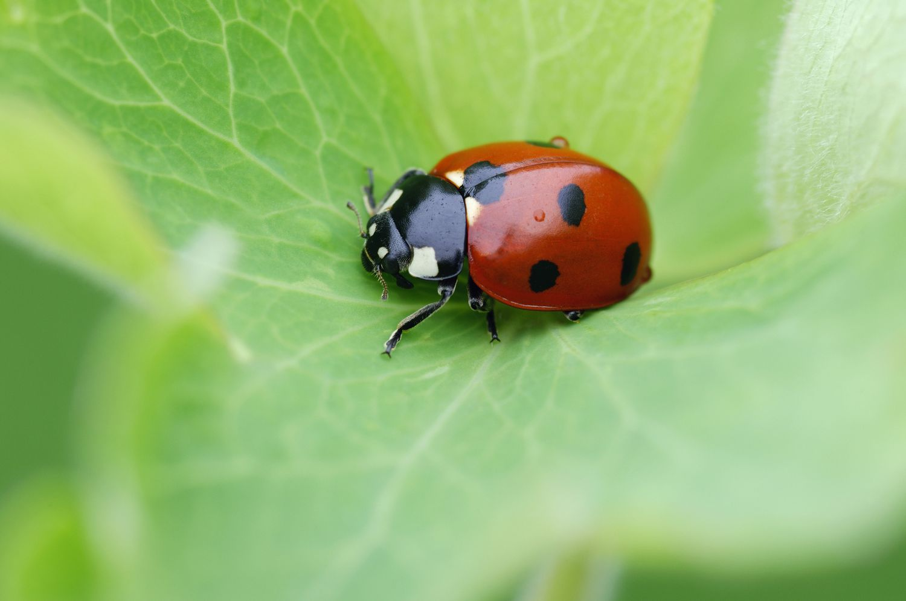
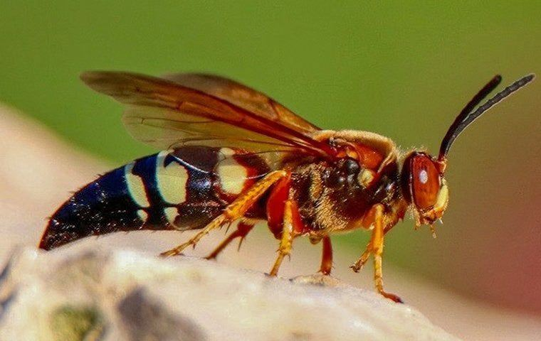
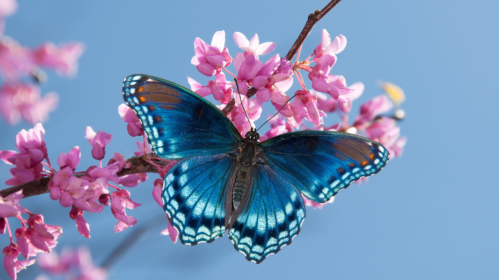

What is an insect hotel?
It’s a structure made to attract and protect beneficial insects. By mimicking hollow logs and stems, it creates homes for species that otherwise struggle in urban areas.
Why do pollinators matter?
- 75% of flowering plants depend on pollinators
- Without them, food systems and biodiversity suffer
- Mason bees, ladybugs, and butterflies are just a few key players
How pollinators help us every day
Pollinators don’t just help flowers bloom — they are behind many of the fruits, vegetables, and crops we love. Apples, coffee, almonds, and chocolate all depend on pollination. Pollinators also support the plants that feed and shelter other animals, making them vital for balanced ecosystems.
Who lives in our insect hotel?
Mason Bees
Efficient pollinators known for nesting in holes and small cavities.

Ladybugs
Great for pest control – they eat aphids and other harmful insects.
Solitary Wasps
Non-aggressive insects that help control pest populations.
Butterflies
Important pollinators and indicators of a healthy ecosystem.
Can I build one at home?
Yes! Watch this step-by-step guide to make a simple insect hotel using recycled materials:
How does the insect hotel help HIM achieve its goal of sustainability?
The insect hotel helps HIM achieve its goal of sustainability by promoting biodiversity and supporting local ecosystems. It provides a safe habitat for beneficial insects like bees, ladybugs, and butterflies, which play a crucial role in pollination and natural pest control. By encouraging a healthy insect population, HIM reduces the need for chemical pesticides and supports a balanced, eco-friendly environment. This aligns with the school’s commitment to sustainability and environmental responsibility.
Did you know?
- Ladybugs can eat up to 5,000 aphids in their lifetime.
- Solitary bees are 3 times more effective at pollination than honeybees.
- Pollinators support the growth of chocolate, coffee, and apples!